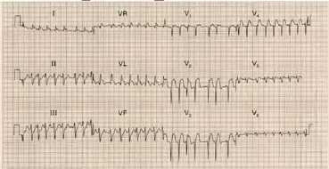
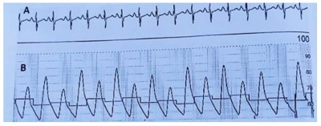
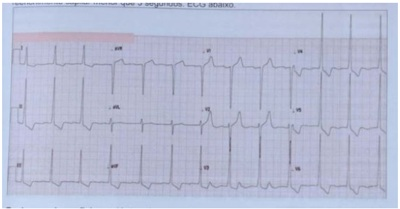

Questão 1 · Fisiopatologia · 4000188901Não se relaciona(m) com a fisiopatologia da insuficiência cardíaca:
A a liberação de renina, o aumento de angiotensina II e a redução de aldosterona em decorrência da estimulação simpática dos rins
B a descarga dos barorreceptores de alta pressão localizados no ventrículo esquerdo, seio carotídeo e arco aórtico
C a liberação de arginina-vasopressina ou hormônio antidiurético pela hipófise posterior
D a ativação das vias eferentes do sistema nervoso simpático
Questão 2 · Classif icação · Diagnóstico · 4000185705Em relação à Insuficiência Cardíaca (IC), é correto afirmar:
A Aproximadamente, 10% dos pacientes com insuficiência cardíaca têm a função sistólica do ventrículo esquerdo (VE) preservada e geralmente apresentam algum grau de disfunção diastólica.
B Entre os sintomas e sinais da insuficiência cardíaca por disfunção do ventrículo direito estão o refluxo hepatojugular; turgência jugular, edema de membros inferiores e a dispneia paroxística noturna.
C A classificação da insuficiência cardíaca pela New York Heart Association é extremamente útil para categorizar o grau da IC. No entanto, tornou-se obsoleta como guia para indicar o tipo de tratamento farmacológico.
D A hiponatremia é um indicador da ativação pronunciada do sistema renina-angiotensina e um sinal de mau prognóstico.
E Após 2 meses de tratamento com 100mg de ferro elementar via oral, diariamente, a maioria dos pacientes têm a correção total do nível de hematócrito e da hemoglobina, caracterizando o término da reposição de ferro oral.
Questão 3 · Diagnóstico · 4000185223Um homem de 63 anos de idade, com antecedente pessoal de hipertensão arterial sistêmica, em uso irregular de enalapril 20 mg/dia, compareceu ao pronto atendimento com queixa de dispneia aos esforços piorada há 1 semana, com dispneia aos mínimos esforços atualmente. Relata ortopneia e dispneia paroxística noturna, além de edema de membros inferiores, sem febre ou dor torácica. Refere tosse seca e nega tabagismo. Assinale a alternativa que apresenta o diagnóstico provável do paciente nesse caso clínico hipotético.
A pneumonia
B doença pulmonar obstrutiva crônica exacerbada
C insuficiência cardíaca descompensada
D infarto do miocárdio
E tuberculose pulmonar
Questão 4 · Manif estações clínicas · 4000184684Paciente masculino, 55 anos, branco, diabético e hipertenso há 10 anos, trabalhador rural. Paciente procura atendimento na emergência por dispneia há 4 meses e edema de membros inferiores, que melhoram pela manhã e pioram a tarde. Ao exame físico: BEG, consciente e orientado, descorado 1+/4+, hidratado, eupneico. Pressão arterial: 150x90mmHg, frequência cardíaca de 110bpm. Ritmo cardíaco regular, bulhas normofonéticas, sem sopros. Ausculta pulmonar: murmúrio vesicular abolido em bases, frêmito toracovocal diminuído em bases, percussão: submaciço em terços inferiores, bilateralmente. O achado ao exame físico que aumenta a probabilidade do diagnóstico de insu ciência cardíaca congestiva neste paciente é:
A Presença de piparote positivo
B Edema com presença de cacifo
C Manobra do refluxo hepatojugular positiva
D Fígado palpável a 8cm do rebordo costal direito
Questão 5 · BNP e NTproBNP · Exames laboratoriais · 4000182500Os exames séricos de maior valor para o diagnóstico de insuficiência cardíaca são:
A troponina e pró-calcitonina.
B Na/K e PCR.
C D-dímero e Rx de tórax.
D albumina e MR-pro-ANP.
E BNP e NT-pro-BNP.
Questão 6 · Etiologia · Insuf iciência Cardíaca · 4000182168Homem, 41 anos, trabalhador rural, hipertenso em uso irregular de anti-hipertensivos. Foi admitido em hospital com queixa de dispneia, ortopneia, edema de membros inferiores e palpitações há 1 mês além de oligúria há 2 dias. Feito o diagnóstico inicial de insu ciência cardíaca e tratado com furosemida e vasodilatadores, sem melhora do quadro. História de consumo prévio de 95 g de etanol/dia por 15 anos; parou há 4 meses, no decorrer dos quais perdeu 10 Kg. Exame físico: consciente, afebril, PA 130/75 mmHg, FC: 121 bpm, estase jugular, edema depressível generalizado, pulsos amplos extremidades quentes, sem nistagmo ou ataxia. Exames complementares revelam: derrame pleural bilateral, acidose lática, fração de ejeção do ventrículo esquerde de 77% (aferida por ecocardiograma). Qual a etiologia mais provável da insu ciência cardíaca?
A Deficiência de tiamina.
B Miocardite viral.
C Miocardiopatia alcoólica.
D Cardiopatia hipertensiva.
Questão 7 · Radiograf ia de tórax · Diagnóstico · 4000181775Paciente do sexo masculino, 67 anos de idade, refere, há cerca de 3 meses, dispneia progressiva até moderados esforços, associada com tosse seca, ortopneia, dispneia paroxística noturna e edema de membros inferiores bilaterais. Nega febre, escarro e chiado no peito. Refere ter HAS (hipertensão arterial sistêmica), mas faz uso irregular de antihipertensivos. Ex- tabagista 20 maços/ano, abandonou o vício há 15 anos. Nega patologias pulmonares prévias. Ao exame está em regular estado geral, eupneico, saturação periférica de oxigênio 92% em ar ambiente, FC: 90bpm, FR: 20 irm, PA: 180x100mmHg; ausculta pulmonar: estertores nos bibasais; ausculta cardíaca: ritmo cardíaco regular, 2 tempos; membros edema bilateral simétrico de membros inferiores 3+/6+. Vem na consulta com os seguintes resultados de exames: Espirometria: Pré-broncodilatador: CVF 3,30 (85%)-VEF1 3,20 (80%) – VEF1/CVF 88% Pós-broncodilatador: CVF 3,40 (86%)- VEF1 3,22 (82%) -VEF1/CVF 85% Raio-X de tórax O diagnóstico mais provável para esse caso é de

A pneumonia.
B DPOC.
C neoplasia.
D insuficiência cardíaca.
Questão 8 · Diagnóstico · Insuf iciência Cardíaca · 4000181602Em relação à classificação da insuficiência cardíaca, segundo a American Heart Association (AHA), é correto afirmar que
A um homem de 56 anos, com fração de ejeção (FE) de 36% no ecocardiograma, é considerado classe A.
B uma mulher caucasiana de 61 anos, com hipertensão arterial e sem alterações no ECG e/ou no ecocardiograma, é considerada classe C.
C uma mulher de 42 anos, portadora de miocardiopatia puerperal, com FE de 18% e quadro clínico refratário ao tratamento clínico otimizado, é considerada classe D.
D a presença de alterações cardíacas estruturais, sem sintomas de insuficiência cardíaca, é considerada classe C.
E a presença de dispneia aos pequenos esforços é considerada classe III.
Questão 9 · Classif icação · Etiologia · Manif estações clínicas · 4000181543A Insu ciência Cardíaca (IC) é um grande problema mundial afetando mais de 20 milhões de indivíduos, com prevalência de 2% da população adulta em países desenvolvidos. Avalie as a rmativas seguintes sobre a IC e assinale como verdadeira (V) ou falsa (F). I. IC era classificada como “sistólica” ou “diastólica”, termos hoje abandonados e substituídos, respectivamente, por IC com fração de ejeção (FE) reduzida e IC com FE preservada. II. São exemplos de IC com FE reduzida: cardiopatia isquêmica, cardiopatia chagásica, taquiarritmias crônicas, tireotoxicose. III. São exemplos de IC com FE preservada: miocardiopatia restritiva, miocardite viral, miocardiopatia hipertró ca, anemia crônica. IV. Muitos casos de miocardiopatia dilatada são secundários a problemas genéticos específicos, em particular aqueles no citoesqueleto. V. A despeito dos avanços no tratamento da IC, o surgimento dos sintomas determina prognóstico reservado. Estudos comunitários indicam mortalidade de 30-40% em 1 ano após o diagnóstico, e 60-70% no prazo de 5 anos. A sequência correta é
A V, V, V, F, F
B V, V, F, F, V
C F, V, F, F, V
D F, F, V, V, F
E V, F, F, V, V
Revisar: possível letra faltando em enunciado
Questão 10 · Diagnóstico · Cardiologia · 4000170560A insu ciência cardíaca é uma síndrome clínica decorrente da incapacidade do coração de bombear o sangue adequadamente, secundária, em boa parte dos casos, a um controle pressórico inadequado, por longos períodos de tempo. Para seu diagnóstico, além do amparo de exames complementares, é necessário se basear nos sinais e no s sintomas clínicos, boa parte englobados nos chamados critérios de Framingham para o diagnóstico da insuficiência cardíaca. Entre os critérios maiores, encontra-se o(a)
A dispneia a esforços ordinários.
B diminuição da capacidade funcional em um terço da máxima registrada previamente.
C refluxo hepatojugular.
D hepatomegalia.
E derrame pleural.
Questão 11 · Manif estações clínicas · 4000165147A insu ciência cardíaca é uma síndrome clinica decorrente de uma disfunção cardíaca envolvendo enchimento ventricular e/ou ejeção ventricular. Seus sintomas cardinais são dispneia e fadiga, tendo como sinais comuns estertoração pulmonar e edema. Com respeito à Insuficiência Cardíaca, analise as afirmações abaixo. I - No paciente ambulatorial, o edema periférico tende a ser simétrico, envolvendo tornozelos e região pré-tibial. II - No paciente sem pneumopatia, a presença de estertores à ausculta é especifica para insuficiência cardíaca. III - Na insu ciência cardíaca crônica, devido ao aumento de pressões de enchimento ventricular, é infrequente a ausência de estertores à ausculta. Selecione a opção correta.
A As afirmativas I e II são verdadeiras. A afirmativa III é falsa.
B As afirmativas I e III são verdadeiras. A afirmativa II é falsa.
C As afirmativas II e III são verdadeiras. A afirmativa I é falsa.
D As afirmativas I, II e III são verdadeiras.
E As afirmativas I, II e III são falsas.
Questão 12 · Ecocardiograma · Diagnóstico · 4000163322Paciente internado com suspeita clínica de insu ciência cardíaca. Realizada ecocardiogra a que evidenciou fração de ejeção de 62%, hipertro a concêntrica do ventrículo esquerdo e disfunção diastólica. Após análise detalhada do caso clínico e das medidas ecocardiográ cas, o paciente foi classificado com probabilidade intermediária para diagnóstico de insuficiência cardíaca com fração de ejeção preservada (ICFEp). Com base nesse caso e segundo a Atualização de Tópicos Emergentes da Diretriz Brasileira de Insu ciência Cardíaca – 2021, assinale a alternativa correta.
A A diretriz cita intervenções específicas que reduzam eventos cardiovasculares em pacientes com ICFEp, como uso de sacrubitril valsartana e análogos do GLP1.
B Nos casos de probabilidade intermediária, o algoritmo sugere a realização de ecocardiograma de estresse diastólico ou teste hemodinâmico invasivo.
C O escore H2FPEF é composto por hipertensão arterial sistêmica (2 pontos), fibrilação atrial, hipertensão pulmonar, idade avançada e pressões de enchimento do ventrículo esquerdo elevadas.
D O escore HFA-PEFF é composto por critérios ecocardiográficos funcional e morfológico, apenas.
E Escores como o H2FPEF e o HFA-PEFF não são usados para casos com probabilidade intermediária. Seu uso é restrito à exclusão diagnóstica, com alto valor preditivo negativo.
Revisar: possível letra faltando em enunciado
Questão 13 · Etiologia · Cardiopatia dilatada · 4000142482Dentre as condições apresentadas, assinale aquela que de ejeção do ventrículo esquerdo.
A Doença de Chagas.
B Tratamento com daunorrubicina.
C Miocardite viral.
D Miocardite alcoólica.
E Beribéri.
Questão 14 · Diagnóstico · 4000141650Homem de 48 anos refere falta de ar aos esforços e edema de membros inferiores há 2 anos, de caráter progressivo. Há 3 meses, apresenta edema facial pela manhã que melhora durante o dia. AP: tabagista 80 anos/maço, HAS e DM tipo II há 6 anos. Exame físico: PA 160 x 100 mmHg, FC 104 bpm, ictus no sexto espaço intercostal dois cm para fora da linha hemiclavicular esquerda, estase jugular +/4, crepitações nas até terço médio dos pulmões, edema de membros inferiores até raiz da coxa. Saturação de oxigênio de 90%. O diagnóstico mais provável é
A insuficiência cardíaca com fração de ejeção preservada.
B insuficiência cardíaca com fração de ejeção reduzida.
C DPOC com cor pulmonale.
D síndrome nefrótica de etiologia diabética.
Questão 15 · Diagnóstico · 4000136926Uma paciente de 36 anos de idade, casada e mãe de dois lhos, procura o ambulatório de um hospital informando apresentar-se sem problemas de saúde até o período de dois anos. A partir de então, notou o surgimento de dispneia progressiva aos esforços. Há um mês, apresenta tal sintoma, de forma intensa, ao caminhar uma distância menor do que 100 metros em superfície plana. Nega tosse, chiados no peito, dor torácica, hemoptise, febre, sudorese, calafrios e perda de peso. O exame físico mostra PA = 120 mmHg x 80 mmHg, FC = 85 bpm, FR = 20 irpm e SatO2 = 98%. A ausculta cardíaca mostra hiperfonese de segunda bulha em foco pulmonar. O exame do abdome revela fígado palpável a 8 cm do rebordo costal direito e hepatimetria de 16 cm. Observa-se edema de membros inferiores mole, frio e indolor, atingindo ambos os maléolos. Acerca desse caso clínico e considerando os conhecimentos médicos correlatos, julgue o item a seguir. Os achados de história clínica e do exame físico mostram que a paciente apresenta uma insuficiência cardíaca esquerda.
A Certo.
B Errado.
Questão 16 · Exames Complementares · 4000136013Considerando a solicitação adequada de exames complementares cardiológicos e achados detectados após sua realização e com base nos conhecimentos médicos correlatos, julgue o item a seguir. Em pacientes com insuficiência cardíaca de fração de ejeção reduzida, estáveis com sintomas NYHA I, um ecocardiograma transtorácico periódico deve ser realizado a cada três a cinco anos na ausência de mudança terapêutica.
A Certo.
B Errado.
Questão 17 · Manif estações clínicas · Coronariograf ia · 4000133892Analise as seguintes afirmativas sobre a insuficiência cardíaca congestiva. I. O BNP (peptídeo natriurético cerebral) e o NT-proBNP séricos, embora menos específicos em idosos e em portadores de doença pulmonar obstrutiva crônica, são marcadores que permitem diferenciar dispneia secundária à insu ciência cardíaca de causas não cardíacas. II. O ecocardiograma permite diferenciar uma IC com função sistólica de ventrículo esquerdo preservada ou não. Pode ainda definir o tamanho das quatro câmaras cardíacas, a contratilidade, a fração de ejeção e a anatomia das válvulas cardíacas. III. Os pacientes com ICC, de acordo com a New York Heart Association, podem ser categorizados em classes: i. sintomático em repouso; ii. sintomático com mínimas atividades; iii. sintomas com atividade moderada e classe iv. assintomático, e isso tem importância na escolha do tratamento. Estão corretas as afirmativas
A I e II apenas.
B I e III apenas.
C II e III apenas.
D I, II e III.
Questão 18 · Cardiologia · 4000133586Considere o mecanismo de
A Quanto maior a pré-carga, menor a contratilidade do coração.
B Refere-se à capacidade do coração para se adaptar a variações do volume sanguíneo, alterando a sua contratilidade nas diferentes situações.
C Em casos de hipervolemia, o coração adapta-se diminuindo a sua força de contratilidade.
D Em casos de hipovolemia, observa-se um acréscimo no débito cardíaco.
E Quanto menor a pré-carga, maior o débito cardíaco.
Questão 19 · Manif estações clínicas · Diagnóstico · 4000131302Paciente de 78 anos com histórico de insu ciência cardíaca, em tratamento irregular, é admitido no pronto socorro com quadro de dispneia. Os familiares informam que ele não vem utilizando adequadamente a medicação e tem constantemente abusado na ingesta de sódio. Na sua avaliação, encontra-se dispneico, com crepitações em pulmão bilateral e com frequência respiratória de 28 ipm. Sua Pressão Arterial é de 114x72mmHg e com frequência cardíaca de 78bpm, suas extremidades estão bem perfundidas e seus membros inferiores com edema ++/IV, sem outras alterações. Você realiza um exame de ultrassonografia a beira leito e visualiza a imagem a seguir em 4 quadrantes: Disponível em: World J Radiol 2014 Junh 28;6(6):230-7 Qual achado podemos visualizar?

A Presença de Linhas A.
B Presença de Linhas C.
C Presença de Linhas B.
D Presença de Deslizamento Pleural.
E Presença de Líquido Livre Pleural.
Questão 20 · Exames Complementares · Diagnóstico · 4000131171Um paciente de 35 anos de idade, com miocardiopatia isquêmica dilatada com fração de ejeção prévia de 30%, encaminha- se à emergência com dor torácica em aperto há sete horas, dispneia importante e sudorese. Foram solicitados exames laboratoriais que demonstraram hemograma normal, função renal e eletrólitos normais. Seu peptídeo natriurético cerebral (BNP) era de 300 pg/mL (valor de referência até 150 pg/dL). Solicitou-se, então, o eletrocardiograma representado na figura a seguir. Fonte ECG: John Hamptom 150 ECGs problems Considerando esse caso clínico, a figura apresentada e os conhecimentos médicos correlatos, julgue o item a seguir. Ao avaliar o valor de BNP para esse paciente, pode-se afirmar que ele está com insuficiência cardíaca descompensada.

A Certo.
B Errado.
Questão 21 · Manif estações clínicas · Diagnóstico · 4000123481Assinale a assertiva incorreta sobre o diagnóstico de insuficiência cardíaca (IC).
A Limitações para o uso dos peptídios natriuréticos incluem elevação de seus níveis quando associada com anemia, insuficiência renal crônica, idade avançada e, ainda, com o fato de apresentarem níveis mais baixos na presença de obesidade.
B O principal uso dos peptídios natriuréticos relaciona-se com a possibilidade de exclusão do diagnóstico de IC, em casos de dúvida diagnóstica.
C Em pacientes crônicos, sinais e sintomas de congestão podem estar ausentes devido a processos adaptativos, razão pela qual a presença de sinais como turgência venosa jugular ou B3 são pouco específicos.
D Ecocardiografia deve ser realizada em todos os pacientes com diagnóstico clínico de IC, para avaliação de estrutura e função ventricular, além de avaliação etiológica e prognóstica.
E Para aumentar a especificidade no diagnóstico da IC com fração de ejeção preservada, os achados clínicos devem ser complementados por avaliação de biomarcadores e/ou exames de imagem cardíaca.
Questão 22 · BNP e NTproBNP · 4000119248A elevação plasmática de BNP e NT-proBNP pode ser desencadeada por várias afecções clínicas, no entanto, NÃO se espera que ocorra em decorrência de
A sepse.
B disfunção de ventrículo esquerdo, assintomática.
C agudização de DPOC.
D hipertensão pulmonar.
E diarréia e hipovolemia.
Questão 23 · Diagnóstico · 4000114935Homem, 20 anos, previamente assintomático. Há 20 dias refere dispneia que progrediu em poucos dias para aos mínimos esforços, acompanhada de fadiga e edema que evoluiu para anasarca. Refere quadro ""gripal"" há 30 dias, tratado com sintomáticos. Exame físico: edema depressível, indolor, ++/++++ bilateralmente, em membros inferiores até joelhos; jugulares distendidas até 8 cm acima do manúbrio esternal, em decúbito a 45 graus, com variação respiratória normal. Temperatura axilar = 36,5 ºC; FC = 98 bpm, rítmico, precórdio sem anormalidades, estertores crepitantes em ambas as bases pulmonares posteriormente. ECG com alterações difusas de repolarização ventricular. RX de tórax com ICT = 0,65 e congestão para-hilar bilateral. ECG (DII) ( figura A) e registro invasivo de pressão arterial sistêmica (mmHg) no gráfico ( figura B). Qual é a alteração fisiopatológica mais provável?

A Derrame pericárdico de grande volume.
B Hipertensão pulmonar emboligênica.
C Aumento do fluxo pulmonar por cardiopatia congênita.
D Disfunção biventricular sistólica grave.
Questão 24 · Manif estações clínicas · 4000098966O ACHADO CLÍNICO MAIS CONFIÁVEL PARA AVALIAR INSUFICIÊNCIA VENTRICULAR DIREITA É:
A Estertores de bulhas finas em bases.
B Perfusão periférica diminuída.
C Estase jugular pulsátil a 45°.
D Edema de membros inferiores.
Questão 25 · BNP e NTproBNP · Manif estações clínicas · Def inição · 4000092501Considere uma paciente feminina, 55 anos, atendida no pronto-socorro com história de dispneia aos moderados esforços há 45 dias, com piora progressiva, associada a ortopneia, dispneia paroxística noturna e edema progressivo de membros inferiores. Ao exame, em repouso, a paciente apresenta frequência respiratória de 26 irpm, saturação de oxigênio de 92% em ar ambiente, pressão arterial de 161/91 mmHg; frequência cardíaca de 89 bpm, edema de membros inferiores ++/4 e presença de turgência jugular. A ausculta cardíaca não apresenta alterações. Na ausculta pulmonar apresentava estertores nos discretos em ambos as extremidades inferiores dos campos pulmonares posteriores. A paciente foi internada e submetida a ecodopplercardiogra a, que mostrou uma fração de ejeção do ventrículo esquerdo de 66% pelo método biplanar de Simpson. Assinale a alternativa correta em relação ao caso:
A A paciente apresenta uma dispneia de causa pulmonar já que a função contrátil do ventrículo esquerdo é normal.
B Os sinais e sintomas apresentados pelo paciente são compatíveis com o diagnóstico de cor pulmonale.
C Um resultado negativo na dosagem do peptídeo natriurético atrial é suficiente para descartar insuficiência cardíaca nessa paciente.
D O paciente apresenta insuficiência cardíaca congestiva com fração de ejeção preservada do ventrículo esquerdo.
E Não há outros parâmetros na ecodopplercardiografia, além da fração de ejeção do ventrículo esquerdo, que possam corroborar o diagnóstico de insuficiência cardíaca.
Questão 26 · Estenose mitral · Exame f isico · Classif icação de acordo com a gravidade dos sintomas · 4000080841MIS, 20 anos, negra, Gesta I, Para 0. Fez pré-natal regularmente. Foi admitida na Maternidade do HPC queixando-se de dor em baixo ventre e perda de tampão mucoso. IG 38 semanas e 2 dias. HPP: Refere febre reumática na infância. O ecocardiograma recente revelou estenose mitral leve, com função ventricular preservada. No segundo trimestre passou a apresentar dispneia aos grandes esforços e edema MMII +/4, não foi medicada, sendo recomendado o repouso. O exame físico na admissão: encontrava-se lúcida, corada, eupnéica, FC = 92bpm, PA: 100/60 mmHg; AC sopro sistólico no foco mitral +/4+. Pulmões limpos FU 34cm, BCF: 140 bpm; AU =150UA. Toque colo apagado 90%, dilatado para 6cm. Apresentação cefálica: Bolsa íntegra. Como classificar a cardiopatia de acordo com os sintomas?
A NYHA 0;
B NYHAI;
C NYHAII;
D NYHA III;
E NYHA IV;
Questão 27 · Classif icação de acordo com a gravidade dos sintomas · 4000068209Na classificação da Insu ciência Cardíaca (New York Heart Association), pertencem a classe funcional III, pacientes com cardiopatia que:
A resulta em evidente limitação das atividades físicas. Ficam confortáveis em repouso. Atividades físicas mínimas causam fadiga, palpitação, dispneia ou dor anginosa.
B os torna incapacitados para realizar qualquer atividade física sem desconforto.
C dê sintomas de insuficiência cardíaca ou de síndrome anginosa mesmo durante o repouso. Se qualquer atividade física for realizada, o desconforto aumentará.
D atividades físicas normais não causam fadiga exagerada, palpitações, dispneia ou dor anginosa. Não limitam atividades físicas.
E resulta em pequenas limitações das atividades físicas. Ficam confortáveis em repouso. A atividade física normal resulta em fadiga, palpitações, dispneia ou dor anginosa.
Questão 28 · Etiologia · 4000066286São causas de insuficiência cardíaca com fração de ejeção preservada:
A Cardiomiopatia hipertrófica, senectude, sarcoidose
B Doença de Chagas, insuficiência mitral, comunicação interventricular
C Amiloidose, Cor pulmonale, insuficiência aórtica
D Hipertensão arterial sistêmica, cardiomiopatia dilatada isquêmica, anemia crônica
E Miocardite viral, taquicardiomiopatia, tireotoxicose
Questão 29 · Fisiopatologia · 4000053625A insu ciência cardíaca (IC) afeta mais de 20 milhões de indivíduos no mundo. Suas diversas causas podem ser englobadas na IC com fração de ejeção (FE) reduzida ou IC com FE preservada. Nos pacientes que apresentam IC com redução da FE, podem ocorrer diversos eventos nos níveis celular e molecular. Em relação aos mecanismos básicos da IC com FE reduzida, analise os eventos abaixo. I) Hipertrofia de miócitos. II) Alterações das propriedades contráteis dos miócitos. III) Perda de miócitos por necrose ou apoptose. IV) Dessensibilização alfa-adrenérgica. Escolha entre as alternativas abaixo, a que inclui eventos corretamente relacionados à IC com FE reduzida.
A I e II apenas.
B I e III apenas.
C II e IV apenas.
D I, II e III apenas.
E I, III e IV apenas.
Questão 30 · Classif icação · Diagnóstico · 4000113201Homem, 75 anos, hipertenso, com dispnéia aos grandes esforços, progredindo para médios esforços há 2 meses. Tabagista há 35 anos (um maço/dia). Usa hidroclorotiazida (25 mg/dia) há 8 anos. Exame físico: PA= 170X85 mmHg; FC= 84 bpm; ritmo cardíaco regular, hiperfonese de A2, ictus no 4° espaço intercostal, compreendendo 2 polpas digitais, na linha hemiclavicular esquerda, sem sopros; sibilos esparsos e estertores crepitantes nas bases pulmonares. Exames subsidiários: ECG, sobrecarga atrial esquerda; radiogra a simples de tórax, área cardíaca normal, com inversão da trama vascular; ecocardiograma, septo interventricular de 15 mm (VR < 11), parede posterior de ventrículo esquerdo de 13 mm (VR < 11) e fração de ejeção de 68% (VR > 58%). A hipótese diagnóstica mais provável é:
A Insuficiência cardíaca sistólica secundária à cardiomiopatia hipertrófica assimétrica
B Insuficiência cardíaca diastólica secundária à hipertensão arterial
C Insuficiência cardíaca sistólica secundária à hipertensão arterial
D Insuficiência cardíaca diastólica secundária à cardiomiopatia hipertrófica assimétrica
E Doença pulmonar obstrutiva crônica
Questão 31 · Fisiopatologia · 4000108721Homem, 64 anos, queixa-se de dispneia aos esforços, ortopneia e dispneia paroxística noturna há 6 meses. Exame físico: FC = 78 bpm, PA = 132 x 70 mmHg, ictus cordis desviado para a esquerda, ritmo cardíaco regular, 2 bulhas rítmicas e hipofonéticas, sopro holossistólico 2+/6+ em foco mitral. Presença de turgência jugular em decúbito dorsal a 45 graus até o ângulo de mandíbula, hepatomegalia dolorosa e estertores nos bibasais. Extremidades quentes, tempo de reenchimento capilar menor que 3 segundos. ECG abaixo. Qual mecanismo siopatológico é o principal responsável pelas manifestações clínicas desse paciente?

A Aumento da pressão capilar pulmonar.
B Redução da resistência vascular periférica.
C Redução do débito cardíaco.
D Déficit cronotrópico.
Questão 32 · BNP e NTproBNP · Exames Complementares · Diagnóstico · 4000106199Os peptídeos natriuréticos (PN) estão envolvidos na homeostase de volume e pressão do sistema circulatório. Sobre os PN é incorreto afirmar: l - O peptídeo natriurético cerebral (BNP) (tipo B) é um neuro-hormônio que ajuda a regular a PA e o volume de líquidos. ll - Ele é secretado principalmente pelos ventrículos em resposta à pré-carga aumentada, com consequente elevação da pressão ventricular. lll - Como esse exame laboratorial sérico pode ser rapidamente obtido, os níveis de BNP são úteis para o diagnóstico imediato da IC em ambientes como o serviço de emergência. lV - Um nível de BNP superior a 100 pg/mℓ é sugestivo de insuficiência cardíaca. V - Diminuições do BNP podem ocorrer devido a inúmeras outras condições, como embolia pulmonar, infarto do miocárdio e hipertrofia ventricular.
A Apenas l, ll e lV estão corretas.
B Apenas l, lll e V estão corretas.
C Apenas ll, lll e V estão corretas.
D Apenas l, ll, lll e lV estão corretas.
E Todas as alternativas estão corretas.
Questão 33 · BNP e NTproBNP · 4000094918A dosagem de peptídeos natriuréticos BNP ou NT-proBNP pode ser útil em casos de dúvidas diagnósticas em pacientes com queixa de dispnéia, podendo servir como exame de triagem na atenção primária. Quanto a isso, podemos apenas concordar que:
A Além do valor no diagnóstico da Insuficiência Cardíaca (IC), os peptídeos natriuréticos não apresentam valor prognóstico, agregando informação ao exame clínico e a exames de rotina.
B Além do valor no diagnóstico da Insuficiência Cardíaca (IC), os peptídeos natriuréticos apresentam importante valor prognóstico, agregando informação ao exame clínico e a exames de rotina.
C Além do valor no diagnóstico da Insuficiência Cardíaca (IC), os peptídeos natriuréticos apresentam importante valor prognóstico, não agregando informação ao exame clínico e a exames de rotina.
D Além do valor no diagnóstico da Insuficiência Cardíaca (IC), os peptídeos natriuréticos apresentam pouco valor prognóstico, agregando informação ao exame clínico e a exames de rotina.
Questão 34 · Exames Complementares · 4000083697Mulher de 35 anos apresenta-se com uma história de dispnéia progressiva há 1 ano. Foi tratada com broncodilatadores, mas não melhorou. Ela tem sintomas de dispnéia e desconforto torácico aos esforços moderados. O exame físico revela sopro no ventrículo direito, um componente pulmonar hiperfonético de segunda bulha, e um sopro regurgitante 2/6+ tricúspide. Seu eletrocardiograma demonstra desvio do eixo para a direita. Qual é o próximo estudo mais apropriado em sua avaliação?
A Teste de esforço em esteira;
B Um ecocardiograma;
C Testes de funções pulmonares;
D Tomografia computadorizada de alta resolução de tórax;
E Cateterismo cardíaco do coração direito;
Questão 35 · Manif estações clínicas · 4000083670Qual das afirmativas é correta em relação à histórica e ao exame físico em pacientes com insuficiência cardíaca?
A Distúrbio respiratório no sono tem uma prevalência semelhante em pacientes com insuficiência cardíaca e na população em geral;
B Edema de membros inferiores é um sinal relativamente específico de insuficiência cardíaca subjacente;
C Estertores no exame pulmonar são comuns em pacientes com insuficiência cardíaca crônica devido à pressão de enchimento ventricular;
D Um galope apical (B3), é um forte indicador de disfunção sistólica ventricular esquerda e elevada pressão de enchimento ventricular esquerdo;
E A pressão sanguínea é comumente mais baixa (pressão sistólica <90 mmHg) em pacientes com insuficiência cardíaca;
Questão 36 · BNP e NTproBNP · 4000082088O Peptídeo Natriurético tipo B (BNP) é um biomarcador utilizado em conjunto com anamnese e exame físico no diagnóstico de insuficiência cardíaca. Em relação ao BNP, analise as assertivas abaixo: I. É um hormônio secretado pelos ventrículos em resposta ao aumento de volume e estiramento das paredes. II. Sua dosagem não é útil para definir a gravidade da doença em caso de insuficiência cardíaca crônica. III. Seus níveis podem estar aumentados em insuficiência cardíaca de qualquer etiologia. Quais estão corretas?
A Apenas I.
B Apenas I e II.
C Apenas I e III.
D Apenas II e III.
Questão 37 · Fisiopatologia · 4000073067Na presença de insuficiência cardíaca, o que ocorre com o tônus simpático?
A Aumenta
B Diminui.
C Intermitente.
D Lentificado.
E Não apresenta alterações.
Questão 38 · Fisiopatologia · 4000073060O aumento do débito cardíaco é comum em todos os estados patológicos abaixo, EXCETO:
A Hipertireoidismo
B Beribéri
C Anemia
D Infarto do miocárdio.
E Sepse
Questão 39 · Classif icação de acordo com a gravidade dos sintomas · 4000072186Um homem de 70 anos com diagnóstico de insu ciência cardíaca com fração de ejeção reduzida queixa-se de dispneia ao caminhar para ir no banheiro de sua casa. O paciente nega sintomas quando está sentado assistindo televisão e por isso insiste em car no seu quarto a maior parte do dia. Qual a classe funcional do paciente de acordo com a New York Heart Association?
A Classe IIb
B Classe I
C Classe IV
D Classe III
E Classe IIa
Questão 40 · Manif estações clínicas · Fisiopatologia · 4000066577Paciente chagásico, proveniente do interior de Minas Gerais, apresenta fadiga aos esforços, edema ++++/++++ de membros inferiores, dispneia aos esforços e dispneia paroxística noturna ao deitar. Os sintomas se iniciaram há 3 anos, mas pioraram há 2 meses. Não recebe medicação. Qual é a correlação fisiopatológica que você esperaria neste paciente:
A Vasodilatação sistêmica.
B Hipoaldosteranismo.
C Inibição de fator natriurético (BNP).
D Ativação do sistema renina angiotensina aldosterona.
Questão 41 · Classif icação · 4000063615Sobre a insuficiência cardíaca podemos afirmar, EXCETO:
A Pode ser causada por anormalidade da função sistólica e/ou da função diastólica.
B São considerados pacientes com fração de ejeção normal os que apresentam fração de ejeção > 50%.
C São considerados pacientes com fração de ejeção reduzida os que apresentam fração de ejeção < 40%.
D A classificação de NYHA se baseia no grau de tolerância ao exercício e é dividida em classe I a V.
E A classificação proposta pela American College of Cardiology/American Heart Association inclui desde o paciente com risco de desenvolver insuficiência cardíaca até o paciente em estágio avançado da doença.
Questão 42 · Diagnóstico · Ressonância magnética · 4000052596Com relação à Insuficiência cardíaca podemos afirmar que:
A O diagnóstico da Insuficiência cardíaca fundamenta-se em anamnese e exame físico detalhado, nos quais se procuram valorizar os sinais e sintomas de baixo débito cardíaco e os fenômenos congestivos pulmonares e sistêmicos. Os exames complementares auxiliam na confirmação da etiologia e para o diagnostico diferencial;
B Devemos abordar na anamnese antecedentes de sopro cardíaco ou defeitos cardíacos natos, febre reumática, epidemiologia para doença de Chagas, fatores de risco para doença coronariana, hipertensão, diabetes, alcoolismo, uso de drogas e tratamento com quimioterápicos. Todos esses são fatores importantes para o desenvolvimento e/ou agravamento da insuficiência cardíaca;
C A dosagem da creatinina é indispensável em pacientes com insuficiência cardíaca para avaliação e acompanhamento da função renal, visto que a insuficiência renal está presente em pelo menos um terço desses pacientes com insuficiência cardíaca grave e está intimamente associada a descompensações, menor resposta ao tratamento e pior prognóstico;
D A Ressonância Magnética é um exame de grande importância na suspeita de doenças infiltrativas ou de depósito e na vigência de síndromes restritivas, como endomiocardiofibrose e pericardite constritiva;
E Todas acima são verdadeiras.
Questão 43 · Fisiopatologia · 4000052355O cor pulmonale pode ser referido como doença cardiopulmonar. Em relação a esta entidade nosológica, é CORRETO afirmar:
A O ventrículo direito é mais adequado a lidar com sobrecargas de pressão do que de volume.
B A causa mais comum de cor pulmonale é a insuficiência cardíaca, seja com fração de ejeção reduzida ou preservada.
C A ecocardiografia com Doppler permite a estimativa da pressão arterial pulmonar quando o paciente tem refluxo mitral associado.
D O seu mecanismo fisiopatológico comum é uma hipertensão pulmonar que seja suficiente para alterar a estrutura e/ou função do ventrículo direito.
E A redução da intensidade do sopro de regurgitação durante a inspiração, indica a existência de insuficiência tricúspide ("sinal de Rivero-Carvallo").
Questão 44 · Diuréticos · Manif estações clínicas · Fisiopatologia · 4000034526Em quadros de insu ciência cardíaca descompensada (ICD), alterações laboratoriais são situações comuns no dia a dia. Sobre essas alterações, assinale a alternativa INCORRETA:
A Casos de hepatomegalia congestiva secundária à ICD podem cursar com elevação de transaminases no sangue.
B Pacientes com ICD que cursam com congestão hepática aguda podem cursar com clínica semelhante à hepatite aguda viral.
C Pacientes com insuficiência cardíaca em fases mais iniciais podem cursar com eletrólitos séricos totalmente normais.
D Pacientes com ICD e pressão em cunha capilar pulmonar de 13-17 mmHg comumente cursam com radiografia de tórax evidenciando redistribuição da trama vascular pulmonar e edema intersticial.
E A restrição de sódio na dieta, a utilização de diuréticos e elevações dos níveis séricos de vasopressina são fatores que contribuem para o desenvolvimento da hiponatremia na ICD.
Questão 45 · Cirurgia · 4000033020Um homem de 23 anos queixa-se de dispenia ao caminhar mais de um quarteirão no plano e ortopneia com piora nas últimas duas semanas. Não apresenta nenhuma doença conhecida, nega tabagismo, etilismo ou uso de drogas ilicitas. Ao exame clínico, estava alerta corado e hidratado. PA 160/95mmHg, FC 108bpm, FR 23ipm, SpO2 91%. havia crepitações teleinsipiratórias grosseiras nas bases pulmonares. O exame do pulso venoso central revelava aumento da pressão venosa central e acentuação inspiratória. A ausculta cardiáca revelou ritimo cardiáco regular e terceira bulha cardiáca. Havia hepatomegalia dolorosa e palpação. O ecocadiograma revelou dilatação biatrial acentuada, ventrículos de dimensões, espessura e contratilidade global e segmentar normais. padrão de relaxamento pseudonormal do ventrículo esquerdo, regurgitação mitral e tricúspide leves. Sobre esse caso, assinale a alternativa INCORRETA.
A A terceira bulha decorre da interrupção abrupta da fase de enchimento ventricular rápida acentuada por causa da complacência ventricular reduzida.
B O principal mecanismo da dilatação biatrial é a regurgitação mitral e tricúspide.
C O tratamento inclui o uso de diuréticos de alça, controle da pressão arterial sitêmica e da frequência cardíaca.
D Sarcoidose, endomiocardiofibrose e miocardiopatia restritiva idiopática são diagnósticos diferenciais.
Questão 46 · Diagnóstico · 4000029684No diagnóstico de insuficiência cardíaca, considera-se Critério Menor de Framinghan:
A Dispneia paroxística noturna.
B Derrame Pleural.
C Edema agudo de pulmão.
D Refluxo hepatojugular.
E Terceira bulha.
Questão 47 · Estenose aórtica · Etiologia · Cardiologia · 4000009725Insu ciência cardíaca é uma síndrome em que o coração não é capaz de ofertar oxigênio aos tecidos em taxa adequada às demandas ou o faz à custa de elevação de sua pressão de enchimento (pré-carga). Geralmente resulta de disfunção estrutural ou funcional. Assinale a alternativa que contempla uma causa de insuficiência cardíaca diastólica.
A Sepse.
B Doença de Chagas.
C Estenose valvar aórtica.
D Síndrome de Takotsubo.
E Miocardiopatia periparto.
Questão 48 · BNP e NTproBNP · 4000070658O diagnóstico diferencial da dispneia por vezes é muito difícil. Qual o marcador que auxilia a diferenciação de quadros dispneicos causados por insuficiência cardíaca descompensada?
A CKMB.
B Troponina T.
C Mioglobina.
D Peptídeo natriurético tipo B.
Questão 49 · Cardiologia · 4000055801Paciente portador de hipertensão arterial mal controlada veio assintomático à consulta de rotina. O eletrocardiograma mostrou sobrecarga de ventrículo esquerdo. Foi solicitado um ecocardiograma que evidenciou FE 66%, hipertro a concêntrica do ventrículo esquerdo de grau discreto, regurgitação mitral de grau discreto, alteração do relaxamento (onda E < A) tipo I e aumento discreto do átrio esquerdo. Assinale a alternativa que apresenta, correta e respectivamente, o achado mais provável e o estádio desse paciente, seguindo a escala evolutiva de insuficiência cardíaca.
A B3, estádio A.
B B3, estádio B.
C B3, estádio C.
D B4, estádio B.
E B4, estádio C.
Questão 50 · Fisiopatologia · 4000023809Na fase aguda da insuficiência cardíaca, após um evento-índice (como infarto agudo do miocárdio), ocorre:
A aumento da excreção de sódio.
B diminuição da produção de vasopressina.
C aumento da produção dos peptídeos natriuréticos (ANP e BNP).
D aumento dos níveis de bradicinina.
Questão 51 · Etiologia · Vitamina B1Tiamina · 4000009622Paciente indígena do sexo masculino, 18 anos de idade, residente na aldeia Jaguapiru de Dourados, é trazido à emergência com o quadro de dispneia de evolução há 2 dias. Ao exame, apresenta IMC 15 kg/m2, PA 90x20 mmHg, FC 130 bpm. Ausculta cardíaca com ritmo de galope, bulhas hiperfonéticas. Ausculta pulmonar com estertores difusos. Extremidades frias com pulsos liformes associadas a edema de membros inferiores até a raiz de coxa 3+/4+. Qual de ciência vitamínica é mais compatível com o quadro clínico apresentado?
A Vitamina B1
B Vitamina C.
C Vitamina B6.
D Biotina
E Nicotinamida.
Questão 52 · Classif icação · Classif icação de acordo com a gravidade dos sintomas · 4000004567Paciente com Insu ciência Cardíaca que resulta em ligeira limitação da atividade física. Ele ca confortável em repouso. A atividade física ordinária resulta em fadiga, palpitações, dispneia ou dor anginosa. Esse paciente deve ser classificado funcionalmente conforme a New York Heart Association (NYHA) em:
A I.
B II.
C III.
D IV.
Revisar: possível letra faltando em enunciado
Questão 53 · Classif icação de acordo com a gravidade dos sintomas · 4000037280A classificação funcional da insu ciência cardíaca é determinante para orientar a conduta e predizer o prognóstico de um paciente. Abaixo, estabeleça a correlação da Classi cação Funcional da Insu ciência Cardíaca pela New York Heart Association com a apresentação clínica do paciente e, após isso, assinale a alternativa correta: I - Classe I.; II. - Classe II.; III. - Classe III.; IV. - Classe IV.; ( ) Paciente de 68 anos, assintomático ao repouso, porém refere fadiga ao deslocar 20 metros, sendo necessário parar para "recuperar o fôlego".; ( ) Paciente de 58 anos, portadora de neoplasia de mama tratada com quimioterapia adjuvante com Epirrubicina, que cou com Fração de Ejeção Ventricular Esquerda de 43% após término do tratamento quimioterápico, vem a consulta com queixa de palpitações inespecíficas desencadeadas a médios e grandes esforços.; ( ) Paciente de 28 anos, tratado com quimioterapia neo adjuvante com Doxorrubicina para Sarcoma de partes moles em coxa esquerda há 3 anos, apresenta Fração de Ejeção Ventricular Esquerda de 48%, porém ficou com miocardiopatia dilata. Vem para reavaliação assintomático.; ( ) Paciente com 88 anos, portador de cardiopatia chagásica, apresenta diaforese, edema de membros inferiores e ortopneia há 2 dias e sem melhora ao uso de diuréticos, vem ao pronto atendimento para auxílio clínico.
A III - I - II - IV.
B III - II - I - IV.
C IV - II - I - III.
D IV - I - II - III.
E I - II - III - IV.
Questão 54 · Diagnóstico · Manif estações clínicas · Diagnóstico · 4000032004Mulher de 34 anos procurou auxílio médico com queixa de dispneia aos mínimos esforços. A anamnese revelou que dispneia havia se iniciado há cerca de um ano aos esforços maiores e piorou progressivamente. Negou febre, tosse ou dor torácica. Ao exame físico, as jugulares estavam ingurgitadas; havia impulsões sistólicas no segundo espaço intercostal esquerdo próximo à borda external, ao nível da borda esternal esquerda inferior e epigástrico; a segunda bulha cardíaca era hiperfonética no foco pulmonar; o fígado estava palpável 3cm abaixo do rebordo costal direito e era doloroso à palpação. O restante do exame físico estava dentro da normalidade. Dentre as opções abaixo, qual é o diagnóstico MAIS PROVÁVEL?
A Cardiopatia isquêmica descompensada
B Forma cardiopulmonar da esquistossomose
C Hipertensão pulmonar primária e cor pulmonale
D Miocardiopatia chagásica descompensada
Questão 55 · Classif icação de acordo com f ração de ejeção · 4000097334Qual afirmativa está ERRADA?
A A medida do volume do átrio esquerdo pode ser útil no diagnóstico da IC C com função sistólica preservada (diastólica).
B O ponto de corte da fração de ejeção do ventrículo esquerdo para o diagnóstico de ICC diastólica é 0,35.
C Anemia e tireotoxicose são fatores precipitantes de ICC.
D ICC diastólica é comum em idosos.
Questão 56 · Manif estações clínicas · Diagnóstico · 4000046755Uma paciente de cinquenta e cinco anos de idade foi internada em uma enfermaria de clínica médica por apresentar, havia três meses, dispneia associada a tosse seca toda noite. Esse quadro tende a melhorar vinte minutos após a paciente assumir posição ortostática. A paciente não apresenta hemoptise, dor torácica, cianose, febre, sudorese ou calafrios e não há antecedentes mórbidos na história patológica pregressa. O exame físico mostrou PA de 180 x 100 mmHg, frequência cardíaca de 110 bpm e saturação de oxigênio, ao ar ambiente, de 89%. Foi identi cado sopro sistólico em foco mitral com a presença de B3, diminuição do murmúrio vesicular e sibilos em ambas as regiões infraescapulares. As extremidades da paciente não apresentam edema. Identi cou-se, na radiogra a de tórax, derrame pleural bilateral e aumento da cavidade cardíaca. Com relação a esse caso clínico, julgue o item a seguir. A história clínica dessa paciente indica que ela apresenta dispneia paroxística noturna. Respostas: 1 12 23 34 45 56
A Certo.
B Errado.
Revisar: possível letra faltando em enunciado